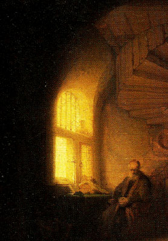

|
Existen varios manuales dedicados a la meditación como el Shaarey Kedushah (Las Puertas de la Santidad) y el Shaar Ruach Hakodesh (La Puerta del Espíritu Santo) del Arí, quien utilizaba el sistema de las unificaciones (Yechudim). Debemos aclarar que el Espíritu Santo era concebido como un estado, como la iluminación final y/o cierto tipo de inspiración. Este estado tenía un aspecto femenino mientras que la profecía tendría un aspecto masculino. 
El Festival de Atracción era un momento propicio para conseguir dicha iluminación. La gente “tiraba” del Ruaj HaKodesh mediante danzas.
En el Shaarey Kedushah se afirma que cualquier individuo, ya sea hombre o mujer, judío o gentil, libre o esclavo, podía conseguir que el Espíritu Santo viniera a él. De lo único que depende es de los actos relaizados.
Para el Baal Shem Tov, un nivel menor de Ruaj HaKodesh se daba cuando se hallaba adherido a Dios y un pensamiento caía en su mente.
El objeto contemplativo más simple en meditación es el Tetragrámaton. Este método contemplativo alcanzó su cenit con Rabbí Sharabi (1702-1777).
Otro método era el internamente dirigido, que consistía en meditar sobre los pensamientos, sentimientos o imágenes mentales espontáneas. La meditación no dirigida, por el contrario, buscaba la quietud de la mente y la retirada de toda percepción. El nivel último es la Nada, el nivel supremo de trascendencia Ayin.
A parte de esta simple división, podemos clasificar los métodos meditativos según los medios empleados:
Intelecto: contemplación de la Torah, el sentido interno de los mandamientos, etc. Ahondar en la estructura de los universos supremos y convertirse en habitante de ellos. El estudio de las obras devocionales contemplando cada concepto.
Emociones: oraciones diarias en las que se pone todo el sentimiento consiguiendo un “desvestimiento” de lo físico. Meditaciones con música (presente en los antiguos profetas)
Mixto: camino del amor (Maimónides como representante) en el que se buscaba el nivel del amor como pasión por Dios y su creación. Dios y su obra eran el objeto de contemplación. El nivel más alto consistía en recibir el Beso de Dios. Movimientos corporales, ejercicios respiratorios (Abulafia), oscilaciones, inclinaciones. Danzas que conducían al éxtasis y a la iluminación.
Schatten
|
 RSS
RSS